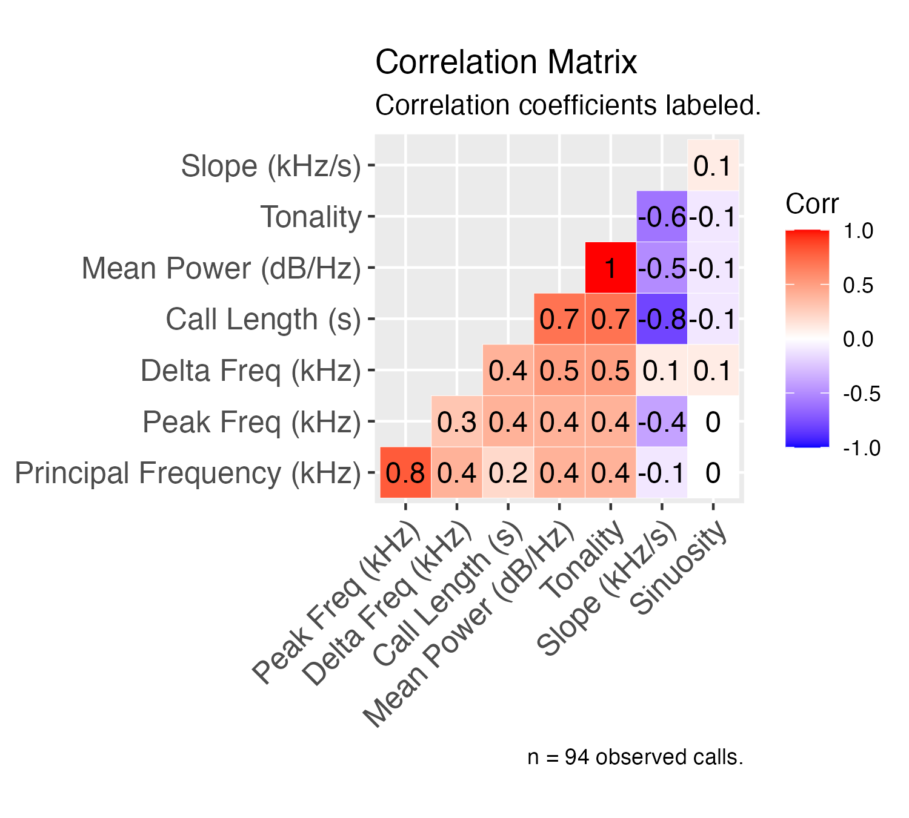

Introduction
The SqueakR package is a centralized,
experiment-centered interface for efficiently organizing and analyzing
bioacoustics data exported from DeepSqueak.
Of its diverse functions, SqueakR is capable of generating
quick plots from vocalization data detected from
DeepSqueak. On top of these visualizations, the package
contains functions which combine all exported DeepSqueak data from
multiple recordings into a single experimental object, allowing
subsequent analysis to be conducted directly from R.
Installation
From CRAN
To use SqueakR, we need to install the package. To
install and load the CRAN version of the package, run the following
function:
install.packages("SqueakR")Next, load the package:
From GitHub
To install the development version of the package from GitHub, run
the code below. Ensure the devtools package is installed,
and devtools is loaded using
library(devtools), before running the following:
library(devtools)
install_github("osimon81/SqueakR")
library(SqueakR)The experiment Object
Creating an experiment
This package allows all data necessary for visualizations to be
stored in a single object. However, to do so, the experimental object
must be created. To create an experiment, run the following
code:
experiment <- create_experiment(experiment_name = "my_experiment")
#> Creating new experiment...This code creates a new experiment object, with the name
my_experiment. When the object is saved, it will be saved
using this name, along with a timestamp. At this point, there’s nothing
stored in this experiment object except its name, but let’s
inspect how experiment is structured:
str(experiment)
#> List of 5
#> $ name : chr "my_experiment"
#> $ last_saved : POSIXct[1:1], format: "2022-06-20 11:01:56"
#> $ groups : NULL
#> $ experimenters : NULL
#> $ experimental_data: list()We can see from the str() function that the
experiment object has 5 main groups listed in it:
-
name: The name we just set for this experiment -
last_saved: A timestamp for the last time thisexperimentwas saved (in this case, this is the time the object was created) -
groups: An empty variable which will be configured to show the experimental groups -
experimenters: An empty variable which will be configured to show the experimenters who collected data -
experimental_data: An empty list which will store all of the data for this experiment
Now that our experiment is created, we can start to add
data to it.
Loading Data
When call data is exported from DeepSqueak, it includes all detected
calls through the length of the recording. However, sometimes, we’re
only interested in calls within a certain range of the entire recording.
SqueakR has the add_timepoint_data() function
to assist with this:
my_new_data <- add_timepoint_data(data_path = "../inst/extdata/Example_Mouse_Data.xlsx", t1 = 5, t2 = 25)
#> Adding call features Excel file to workspace...
#> Restricting data to range: 5 to 25 seconds...The parameters for add_timepoint_data() are defined as
follows:
-
data_path: The full path to the data file -
t1: The timepoint at which calls will start being extracted into themy_new_dataobject -
t2: The timepoint at which calls will stop being extracted into the object.
In the context of the code above, we’ve just extracted all of the calls in the 5-25 second region. To view the data we’ve extracted to confirm this:
# The first few rows of the dataset
head(my_new_data)
#> # A tibble: 6 × 17
#> ID Label Accepted Score `Begin Time (s)` `End Time (s)` `Call Length (s)`
#> <dbl> <chr> <lgl> <dbl> <dbl> <dbl> <dbl>
#> 1 12 18 TRUE 0.573 5.36 5.38 0.0152
#> 2 13 12 TRUE 0.649 6.35 6.39 0.0403
#> 3 14 26 TRUE 0.931 6.46 6.51 0.0488
#> 4 15 19 TRUE 0.969 6.59 6.66 0.0787
#> 5 16 26 TRUE 0.885 6.73 6.77 0.0460
#> 6 17 9 TRUE 0.808 6.85 6.90 0.0445
#> # … with 10 more variables: `Principal Frequency (kHz)` <dbl>,
#> # `Low Freq (kHz)` <dbl>, `High Freq (kHz)` <dbl>, `Delta Freq (kHz)` <dbl>,
#> # `Frequency Standard Deviation (kHz)` <dbl>, `Slope (kHz/s)` <dbl>,
#> # Sinuosity <dbl>, `Mean Power (dB/Hz)` <dbl>, Tonality <dbl>,
#> # `Peak Freq (kHz)` <dbl>
# The last few rows of the dataset
tail(my_new_data)
#> # A tibble: 6 × 17
#> ID Label Accepted Score `Begin Time (s)` `End Time (s)` `Call Length (s)`
#> <dbl> <chr> <lgl> <dbl> <dbl> <dbl> <dbl>
#> 1 100 18 TRUE 0.839 23.2 23.2 0.0272
#> 2 101 8 TRUE 0.823 23.4 23.5 0.0755
#> 3 102 9 TRUE 0.910 23.5 23.5 0.0432
#> 4 103 18 TRUE 0.849 23.6 23.7 0.0550
#> 5 104 18 TRUE 0.849 23.7 23.7 0.0255
#> 6 105 18 TRUE 0.765 23.8 23.8 0.0329
#> # … with 10 more variables: `Principal Frequency (kHz)` <dbl>,
#> # `Low Freq (kHz)` <dbl>, `High Freq (kHz)` <dbl>, `Delta Freq (kHz)` <dbl>,
#> # `Frequency Standard Deviation (kHz)` <dbl>, `Slope (kHz/s)` <dbl>,
#> # Sinuosity <dbl>, `Mean Power (dB/Hz)` <dbl>, Tonality <dbl>,
#> # `Peak Freq (kHz)` <dbl>If we inspect the Begin Time (s) column in the first
table that generated above, you’ll notice the first observation (row)
represents a call that begins at ~5 seconds. Inspecting the
End Time (s) column in the second table, the last call in
the dataset ends at ~24 seconds, indicating that we’ve selected the 5-25
region for calls.
Scoring Data
Once raw data is loaded into R, we can calculate some summary statistics on the region we’ve selected. To do this, run the following code:
my_scored_data <- score_timepoint_data(data_subset = my_new_data,
group = "Control",
experimenter = "my_name")
#> Summarizing call features for datapoint...
str(my_scored_data)
#> List of 14
#> $ group : chr "Control"
#> $ experimenter : chr "my_name"
#> $ calls_n : int 94
#> $ call_length :List of 3
#> ..$ mean : num 0.0437
#> ..$ standard_deviation: num 0.0228
#> ..$ range : num 0.116
#> $ delta_frequency :List of 3
#> ..$ mean : num 16.8
#> ..$ standard_deviation: num 5.6
#> ..$ range : num 30.5
#> $ high_frequency :List of 3
#> ..$ mean : num 65.6
#> ..$ standard_deviation: num 4.11
#> ..$ range : num 19.2
#> $ low_frequency :List of 3
#> ..$ mean : num 48.8
#> ..$ standard_deviation: num 4.54
#> ..$ range : num 26
#> $ peak_frequency :List of 3
#> ..$ mean : num 62.2
#> ..$ standard_deviation: num 5.55
#> ..$ range : num 22.6
#> $ power :List of 3
#> ..$ mean : num -71.9
#> ..$ standard_deviation: num 5.82
#> ..$ range : num 26.9
#> $ principal_frequency:List of 3
#> ..$ mean : num 61.9
#> ..$ standard_deviation: num 3.8
#> ..$ range : num 16.4
#> $ sinuosity :List of 3
#> ..$ mean : num 1.41
#> ..$ standard_deviation: num 0.245
#> ..$ range : num 1.14
#> $ slope :List of 3
#> ..$ mean : num 318
#> ..$ standard_deviation: num 200
#> ..$ range : num 937
#> $ tonality :List of 3
#> ..$ mean : num 0.457
#> ..$ standard_deviation: num 0.109
#> ..$ range : num 0.484
#> $ raw : tibble [94 × 17] (S3: tbl_df/tbl/data.frame)
#> ..$ ID : num [1:94] 12 13 14 15 16 17 18 19 20 21 ...
#> ..$ Label : chr [1:94] "18" "12" "26" "19" ...
#> ..$ Accepted : logi [1:94] TRUE TRUE TRUE TRUE TRUE TRUE ...
#> ..$ Score : num [1:94] 0.573 0.649 0.931 0.969 0.885 ...
#> ..$ Begin Time (s) : num [1:94] 5.36 6.35 6.46 6.59 6.73 ...
#> ..$ End Time (s) : num [1:94] 5.38 6.39 6.51 6.66 6.77 ...
#> ..$ Call Length (s) : num [1:94] 0.0152 0.0403 0.0488 0.0787 0.046 ...
#> ..$ Principal Frequency (kHz) : num [1:94] 60.4 66.6 68.7 66.5 66.6 ...
#> ..$ Low Freq (kHz) : num [1:94] 51.8 66.2 48.7 51.4 48.3 ...
#> ..$ High Freq (kHz) : num [1:94] 61.9 67.3 71.3 69.2 69.3 ...
#> ..$ Delta Freq (kHz) : num [1:94] 10.06 1.11 22.59 17.82 20.93 ...
#> ..$ Frequency Standard Deviation (kHz): num [1:94] 2.618 0.266 5.784 3.991 5.354 ...
#> ..$ Slope (kHz/s) : num [1:94] 534.76 -5.56 352.47 94.86 357.88 ...
#> ..$ Sinuosity : num [1:94] 1.25 1.15 1.66 1.19 1.2 ...
#> ..$ Mean Power (dB/Hz) : num [1:94] -80.3 -66.9 -65 -60.5 -62.9 ...
#> ..$ Tonality : num [1:94] 0.281 0.597 0.581 0.671 0.648 ...
#> ..$ Peak Freq (kHz) : num [1:94] 61.9 66.6 67.9 69.1 68.1 ...Data Structure
Since there is a lot of data contained in this object, here is a summary of the structure.
The following variables are assigned to a single value:
-
group: The experimental group specified in the score_timepoint_data() function. -
experimenter: The experimenter who collected the data -
calls_n: The number of detected calls in the following range
The rest of these variables are extracted from the
my_new_data object have sub-variables stored under them:
mean, standard_deviation, and range:
call_lengthdelta_frequencyhigh_frequencylow_frequencypeak_frequencypowerprincipal_frequencysinuosityslopetonality
More information about the above variables can be found on the DeepSqueak
wiki. Finally, the raw variable contains the entire
extracted dataset (the my_new_data object), which can be
referenced when plotting these data.
The data may appear complicated, but this will be useful later on to organize the data!
Adding Scored Data to Experiment
Now our data is prepared, we can add it to the
experiment object we created. To do so, we can use the
add_to_experiment() function. The parameters for the
function are the experiment object (which we’ve
conveniently labeled experiment), and the data we want to add (which we
just assigned to my_scored_data in the previous
section).
experiment <- add_to_experiment(experiment = experiment, added_data = my_scored_data)
#> Adding summarized data to experiment object...
#> Updating experiment metadata...Removing Data from Experiment
If we want to remove a call dataset from the experiment, we can run the following function:
experiment <- remove_experiment_data(experiment, data_id = 1)data_id corresponds to the index of data in the
experiment object - for example, in the code above, the first data added
to this experiment will be removed. This function also
calls for the experiment to be updated (i.e., check the
leftover data for leftover groups and/or experimenters), and updating
the experiment metadata if there are any groups removed.
Caution is advised for this function, since data that is removed cannot be undone. However, it can be reloaded by finding the original call data and adding it back to the experiment, or creating a new experiment using the pipelines detailed below (if many datasets were accidentally removed, and it would take too long to add data manually).
Summarizing the Experiment
Now, our new data is added to our experiment object! As
seen in the previous section, running str(experiment) can
produce an unwieldy representation of our experiment, so this is
discouraged when dealing with large experiments. As an alternative, we
can run the following SqueakR function:
describe_experiment(experiment = experiment)
#> Experiment name: my_experiment
#> Last saved: 2022-06-20 11:01:56
#> Experimenter(s): my_name
#> Experimental group(s): Control
#> Total call datapoints: 1
#> Data for Control: 1This can be a great way to inspect the contents of our experiment,
and it condenses some of the parameters we set earlier. To clarify the
last two lines of this output: Total call datapoints shows the total
number of call data sheets stored in the experiment
(i.e. how many scored datasets were added to the experiment
in total), and “Data for Control” indicates how many of these datasets
are part of this particular experimental group. In this way, the
function allows us to get a feel for how much of our data is part of any
given experimental group, to ensure the data are balanced.
Updating the Experiment
The add_to_experiment() function runs another
SqueakR function inside of it:
update_experiment(). This function updates the
“Experimenter(s)” and “Experimental group(s)” fields within our
experiment object to reflect the data which is stored in
it. In other words, when we add data that specifies a different
experimental group or a different experimenter, the Experimenter(s) and
Experimental group(s) metadata will auto-populate.
For completeness, the function is run below (however, since the
experiment was already updated through the
add_to_experiment() function, it will not change any
values). It looks through the data stored in the experiment
object, and searches for new groups or new experimenters. These new
groups or experimenters are added to the groups and
experimenters variables stored in the
experiment object.
Note: In reality, since update_experiment() is embedded
in some SqueakR subfunctions, it will not really be used very often (if
at all). However, the function is available for use in the package, to
allow experimenters to make sure they’ve updated their data.
experiment <- update_experiment(experiment = experiment)
#> Updating experiment metadata...Saving the Experiment
Finally, in order to save your experiment to a given
location, you can run the following function. Simply change the value
assigned to save_path to the full path to the directory you want to save
the experiment to.
The file will be saved as an RData file, with the name “[experiment name] ([current date]).RData”
Note: The values in square brachets will populate differently, based
on the name you set for the experiment (based on the
Creating an Experiment section) and the current date. This saving
convention ensures you never lose more than a day of progress if any
mistakes are made.
Experiment Pipelines
Usually, when there are many datasets present in an experiment, it
can be unwieldy to switch between these various functions to create an
experiment and add data to it. SqueakR has
interactive pipeline functions which enable data to be added either
semi-automatically (with experimenter input) or automatically (without
experimenter input). The semi-automatic pipeline can be run using the
following code:
The data can be easily added this way, since the user will be prompted for parameters like experimenter, group, etc for specific data. It can also be helpful to supply descriptive names for the excel files (which may include information about experimenter name, experimental group, time range to subset, etc) when using this function, in order to ensure no mistakes are made while entering these data.
SqueakR also has a pipeline that can be used to automatically add
data and metadata to an experiment without direct
experimenter prompting. The way the pipeline works is it references a Google Sheets document which
contains the metadata about the object. The pipeline prompts the user to
validate columns in the sheet (confirm which column the “experimental
groups” column is in), before adding data (which is stored in a
specified local directory) to the new experiment. The
advantage of automatic pipeline is that all metadata can be entered in
an external document — if any mistakes are made in data entry, they can
be easily corrected. Running the automatic pipeline is done the same way
as the semi-automatic pipeline:
Google Sheets Formatting
There are only a few requirements for the referenced Google Sheet (which SqueakR will use to grab metadata from):
- The sheet accessed by SqueakR is organized by columns.
- Each column represents the filename, experimental group, experimenter, start time-point, and end time-point.
- The filename column matches the full name of the corresponding data file exactly (including the extension).
Besides these requirements, the order of rows or columns in the sheet can be according to whatever conventions the experimenter likes — files do not have to be in the same order as they appear in the folder containing the data. The pipeline will prompt the user for the link to the Sheets document, the actual sheet number which contains the metadata (usually 1, unless it is added to a separate document), as well as ask the user which column corresponds to each metadata.
From this point, the pipeline will loop through every file automatically, assigning the appropriate metadata based on your Google Sheet, and export the created experiment object (if requested).
Data Visualization
Overview
The SqueakR package offers many tools for visualization
of data, and these can be applied to the experiment object
we created to inspect our data. This section of the document will go in
detail for what each of these visualizations look like. In order to
familiarize ourselves with the R syntax, and recap on the structure of
the experiment object, we can retrieve the raw data from
the data we just added to our experiment by running the
following:
experiment$experimental_data[1]$call_data$raw
#> # A tibble: 94 × 17
#> ID Label Accepted Score `Begin Time (s)` `End Time (s)` `Call Length (s)`
#> <dbl> <chr> <lgl> <dbl> <dbl> <dbl> <dbl>
#> 1 12 18 TRUE 0.573 5.36 5.38 0.0152
#> 2 13 12 TRUE 0.649 6.35 6.39 0.0403
#> 3 14 26 TRUE 0.931 6.46 6.51 0.0488
#> 4 15 19 TRUE 0.969 6.59 6.66 0.0787
#> 5 16 26 TRUE 0.885 6.73 6.77 0.0460
#> 6 17 9 TRUE 0.808 6.85 6.90 0.0445
#> 7 18 26 TRUE 0.805 6.97 7.01 0.0421
#> 8 19 2 TRUE 0.804 7.10 7.15 0.0504
#> 9 20 26 TRUE 0.765 7.21 7.24 0.0352
#> 10 21 26 TRUE 0.783 7.31 7.36 0.0552
#> # … with 84 more rows, and 10 more variables:
#> # `Principal Frequency (kHz)` <dbl>, `Low Freq (kHz)` <dbl>,
#> # `High Freq (kHz)` <dbl>, `Delta Freq (kHz)` <dbl>,
#> # `Frequency Standard Deviation (kHz)` <dbl>, `Slope (kHz/s)` <dbl>,
#> # Sinuosity <dbl>, `Mean Power (dB/Hz)` <dbl>, Tonality <dbl>,
#> # `Peak Freq (kHz)` <dbl>
$ Operator in SqueakR
The $ operator allows us to dive deeper in a list, and
inspect values stored within that list. Using the code above, we access
the raw data we put into the experiment by going from
experiment -> experimental_data[1] ->
call_data -> raw. Specifying the number in
square brackets (i.e. experiment$experimental_data[1]) will
locate the first data added, specifying
experiment$experimental_data[2] will located the second
data, etc. Since we only added one dataset to the
experiment, experiment$experimental_data[1]
will lead us to that first set of data we added. From there, we navigate
to call_data (which is a deliberately unremarkable
variable in order to blind the user to the data stored inside it),
and finally the raw data.
Especially if you are new to R, this structure may appear complicated, but it allows our data to be much more organized and allows graphing to be more efficient. We’ll use this structure when locating the data used to graph our visualizations.
Note: For the following functions, the only required variable is the
data_path variable, or the path towards our raw data. All other
parameters (graph_title, graph_subtitle, etc) are optional, since there
are default titles and descriptions prepared in
SqueakR.
Ethnogram-Style Plots
Standard Ethnogram
We can plot an ethnogram to reveal the occurance of a behavior (in our case, a call) over time, using the following function:
plotEthnogram(data_path = experiment$experimental_data[1]$call_data$raw)
We can also specify the graph title and subtitle, if we want to change them, by setting some optional parameters:
plotEthnogram(experiment$experimental_data[1]$call_data$raw,
graph_title = "My Ethnogram",
graph_subtitle = "This is the description I want instead!")
Tonality Ethnogram (Split)
We can plot the ethnogram, and split the lines up according to tonality, using the following code:
plotEthnogramSplitByTonality(experiment$experimental_data[1]$call_data$raw,
graph_title = "My Tonality-Split Ethnogram")
Density-Style Plots
Frequency Density Plot (Stacked)
We can plot the frequency ranges of calls using the following function:
plotDensityStackedByFrequency(experiment$experimental_data[1]$call_data$raw)
With density graphs that are stacked, we can highlight a specific group using the following optional parameter:
plotDensityStackedByFrequency(experiment$experimental_data[1]$call_data$raw,
chosen_group = 50)
Frequency Density Plot (Split)
Oftentimes, when there are too many groups stacked in the above graph, it can be more useful to either highlight the group of interest (as we did above), or split the graph according to frequency group, which can be done below:
plotDensitySplitByFrequency(experiment$experimental_data[1]$call_data$raw)
Custom Label Density Plot (Stacked)
In DeepSqueak, we can label calls either manually, or using computer
vision to assess calls based on the frequency regions in which they
predominate, length, or shape of calls, among some other factors. These
labels are exported from DeepSqueak along with the other call data, and
as a result exist in our experiment object.
Note: Custom labels were arbitrarily set for the example data file, for sake of example.
Density plots can also be configured for these custom labels, as shown below:
plotDensityStackedByCustom(experiment$experimental_data[1]$call_data$raw)
Custom Label Density Plot (Split)
This density plot can also be split according to label:
plotDensitySplitByCustom(experiment$experimental_data[1]$call_data$raw)
Duration Density Plot (Stacked)
We can graph duration - call length using a similar stacked density plot, shown in the code below:
plotDensityStackedByDuration(experiment$experimental_data[1]$call_data$raw)
We can also split these duration groups:
plotDensitySplitByDuration(experiment$experimental_data[1]$call_data$raw)
Histogram Plot
We can plot a histogram representing the distribution of delta frequencies (the difference between the highest and lowest frequencies):
plotDeltaHistogram(experiment$experimental_data[1]$call_data$raw)
Box Plot
We can plot a box-plot distribution of labeled calls, organized by principal frequency (to get a sense of the frequencies where specific call types predominate) using the following code:
plotPrincipalBoxplot(experiment$experimental_data[1]$call_data$raw)
Correlation Plot
Finally, we can plot a correlation matrix, which displays correlations between call features (listed in the Data Structure section), as well as correlation coefficients:
plotCorrelations(experiment$experimental_data[1]$call_data$raw)
Preview Dataset Visualizations
If you don’t want to add data to the experiment object
before visualizing data (in other words, preview the visualizations for
an Excel file), you can run the same functions as above:
plotDensityStackedByFrequency("../inst/extdata/Example_Mouse_Data.xlsx")-1.png)
Keep in mind these plots will generate for the entire set of data,
not a subset of the data like we can do using the
experiment object functions. The only parameter required
for these visualizations is the full path to the data file, which makes
it easy to produce rapid visualizations based on individual Excel
files.
If we want to view an entire set of visualizations (shown in the above sections) for an Excel file as a PDF, we can also run the following function:
plotSummaryPDF("../inst/extdata/Example_Mouse_Data.xlsx", save_path = tempdir())
#> Loading DeepSqueak Excel file...
#> Writing PDF file...
#> Adding charts to PDF...
#> Saving PDF...Data Analysis
Replicating analysis
In order to replicate analysis, let’s add another file to our
experiment by running the following function:
additional_data <- add_timepoint_data(data_path = "../inst/extdata/Example_Mouse_Data.xlsx", t1 = 30, t2 = 50)
#> Adding call features Excel file to workspace...
#> Restricting data to range: 30 to 50 seconds...
additional_data <- score_timepoint_data(data_subset = additional_data, group = "Drug",
experimenter = "new_experimenter")
#> Summarizing call features for datapoint...
experiment <- add_to_experiment(experiment = experiment, added_data = additional_data)
#> Adding summarized data to experiment object...
#> Updating experiment metadata...From this code, a different range of time (30-50 seconds) was subset
from the same data file, so different calls were extracted. Just to get
a sense of what the experiment object looks like after
adding these data:
describe_experiment(experiment)
#> Experiment name: my_experiment
#> Last saved: 2022-06-20 11:01:56
#> Experimenter(s): my_name, new_experimenter
#> Experimental group(s): Control, Drug
#> Total call datapoints: 2
#> Data for Control: 1
#> Data for Drug: 1As mentioned earlier when we first ran this function, we can now see how many datasets are stored under each condition. You’ll also notice that the “Experimenters” and “Experimental groups” field has auto-populated, based on the parameters for the new data we just added.
Let’s try adding one more experimental group and looking at the
experiment object now:
third_dataset <- add_timepoint_data(data_path = "../inst/extdata/Example_Mouse_Data.xlsx", t1 = 70, t2 = 90)
#> Adding call features Excel file to workspace...
#> Restricting data to range: 70 to 90 seconds...
third_dataset <- score_timepoint_data(data_subset = third_dataset, group = "Sham",
experimenter = "experimenter_3")
#> Summarizing call features for datapoint...
experiment <- add_to_experiment(experiment = experiment, added_data = third_dataset)
#> Adding summarized data to experiment object...
#> Updating experiment metadata...Here, we’ve picked a new range within the same file and added this
information to our dataset. If we inspect the experiment
object again, we’ll see the same fields as last time auto-populate:
describe_experiment(experiment)
#> Experiment name: my_experiment
#> Last saved: 2022-06-20 11:01:56
#> Experimenter(s): my_name, new_experimenter, experimenter_3
#> Experimental group(s): Control, Drug, Sham
#> Total call datapoints: 3
#> Data for Control: 1
#> Data for Drug: 1
#> Data for Sham: 1Inter-group comparison
Once we’ve finished adding all of our data to the
experiment object, we can start comparing metrics between
groups. To do this, it will be useful to revisit the structure
experiment object.
Within the experiment object is a list called
experimental_data, which contains all our data (processed and raw) for
each time range we select. Under the call_data for any given object lie
the metrics we can compare (call_length, delta_frequency,
high_frequency, low_frequency, peak_frequency, power,
principal_frequency, sinuosity, slope, and tonality). The way these
variables are written in the experiment object
(i.e. lowercase with underscores between words) will be the same way it
will be entered into the following function to generate comparisons
between groups:
analyze_factor(experiment = experiment, analysis_factor = "delta_frequency")
In the above plot, we compare delta frequency (the average range of frequencies for all calls in a given time range) between different groups. The data look similar because they are based on the same Excel file, just at different time-points, but this highlights the versatility of data extraction using DeepSqueak, in that call data can be processed in not only a between-groups manner but also a within-groups manner.
We can assess other comparisons in this way, by ensuring that we set
analysis_factor to the name of the variable previously
specified in the Data Structure section,
but written in “quotes”. Keeping this format ensures that
SqueakR knows which data to compare.
Future Directions
SqueakR was developed with the primary aim to streamline bio-acoustics data processing in experiments by processing data automatically. To this end, one of the future directions for this project include increasing the analytical post-processing functionalities. One way this may be accomplished is through adding a dependency to the Report package on CRAN and GitHub. Report aims to connect processed data with statistical analyses, and would be suitable for processing DeepSqueak data.
Currently, the SqueakR Shiny Dashboard is a separate, non-CRAN repository which is downloaded independently of the SqueakR package. It may be worth consolidating the dashboard and package under a single CRAN package, where the Dashboard can be run as a separate function within the SqueakR package.
Any suggestions or feedback on current and future directions are welcome in the SqueakR Discussions page!